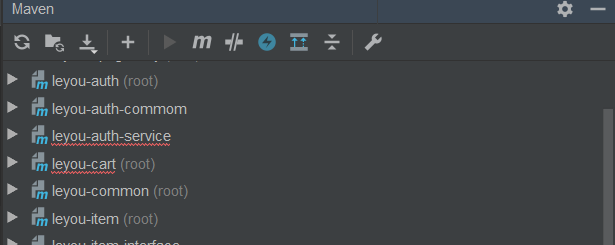

1.遇到的问题：
本人用的idea，然后在导入别人的项目的时候，pom文件中没有报错了，但是在maven栏目中jar包却一直报红，是因为我没写版本的原因吗？不对呀，我的父工程下已经写了springboot的版本了呀， 难道父工程本身就没有引入进来吗？

像这种的jar包好多报红的，@SpringBootApplication都无法引入，更别说其他的注解了，都是一个样。
2.解决的办法：
原因是由于spring-cloud-dependencies包的版本问题，应当将版本由Finchley.SR1更改为Finchley.RELEASE，之后更新一下包问题就解决了。
<dependencies>
<!-- springCloud -->
<dependency>
<groupId>org.springframework.cloud</groupId>
<artifactId>spring-cloud-dependencies</artifactId>
<version>Finchley.RELEASE</version>
<type>pom</type>
<scope>import</scope>
</dependency>
<dependencies>将version版本改一下就好了， Finchley.RELEASE是正式版的。
还是自己不细心吧，不过最好还是用正式的，用着放心